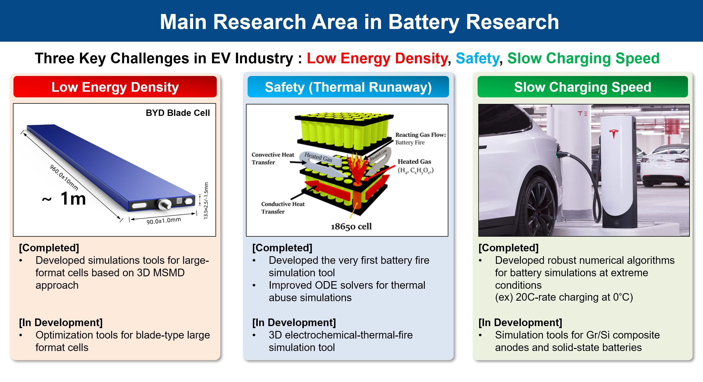
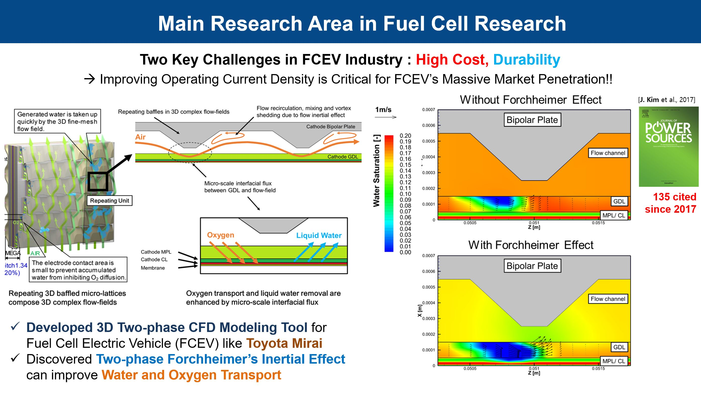

Fuel
cell and battery modeling research is essential for the widespread adoption of
vehicles powered by renewable engines.
Performance optimization:
Modeling
research helps to optimize the performance of fuel cells and batteries by predicting the
behavior of these systems under different operating conditions. This information can be used to
identify design improvements and operating strategies that enhance system performance.
Cost Reduction:
Modeling research can
also help reduce the cost of fuel cells and batteries by identifying cost-effective materials
and manufacturing processes. By predicting the performance of various design alternatives,
researchers can develop systems that are both efficient and cost-effective.
Environmental Impact:
Fuel cells and
batteries have the potential to reduce greenhouse gas emissions and improve air quality.
Modeling research can help to identify the most efficient and environmentally friendly systems,
allowing researchers to focus on the development of sustainable technologies.
Safety:
Modeling research can also be
used to assess the safety of fuel cells and batteries, identifying potential hazards and
developing strategies to mitigate risks. This is particularly important for applications such as
electric vehicles and stationary power systems where safety is a critical concern.
Battery Research

We tackle the three key challenges in EV industry
by developing
various multi-physics simulation tools.
We consider various physical phenomena
simulataneously to enhance battery performance, life, and safety.
We can simulate battery behavior at electrode-, cell-, module-, and pack-level.
REAL offers a variety of battery simulation tools
at various length scales and dimensions.
Our 3D battery multi-physics simulation tools based on Multi-scale Multi-dimension (MSMD) Approach
enables electochemical-thermal simulations of large-format cells. This is critical for optimizing
their form factors to meet required specifications such as pack-level charging times, high-current
performance, and driving range. Our battery simulation tools, based on Ansys Fluent, can be easily
coupled with general battery thermal management systems with different cooling and heating
arrangements.
We are one of the world leaders in battery safety
research.
Prof. Kim, the director of
REAL, developed the very first tool for battery fire CFD simulation. This tool allows us
to predict pressure and flow behavior in battery cells, as well as turbulent combustion behavior
outside of battery cells due to the jet flow coming out from safety vents. This tool was later
implemented in a commercial CFD software, Converge CFD.
Our in-house Newman's pseudo-two-dimensional (P2D)
model equipped with robust numerical algorithms, can simulate batteries at extreme
operating conditions, such as extreme-fast-charging (XFC) conditions over a wide range of
temperatures.
This tool is essential for developing tailored protocols for cold-start and direct-current fast
charging (DCFC) applications.
Selected Publications
A robust numerical treatment of solid-phase diffusion in pseudo
two-dimensional lithium-ion battery models
J. Kim*, A. Mallarapu, S. Santhanagopalan, J. NewmanJournal of Power Sources(2023)
A Comprehensive Numerical and Experimental Study for the Passive
Thermal Management in Battery Modules and Packs
J. Kim*, C. Yang, J. Lamb, A. Kurzawski, J. Hewson, L.
Torres-Castro,
A. Mallarapu,
S. Santhanagopalan
Journal of the Electrochemical Society (2022)
Modeling cell venting and gas-phase reactions in 18650 lithium ion
batteries during thermal runaway
J. Kim, A. Mallarapu, D. F. Finegan, S.
Santhanagopalan*Journal of Power Sources(2021)
Transport Processes in a Li-ion Cell during an Internal Short-Circuit
J. Kim, A. Mallarapu, S. Santhanagopalan*Journal of the Electrochemical Society (2020)
Modeling Extreme Deformations in Lithium-ion Batteries
A. Mallarapu, J. Kim, K. Carney, P. Du Bois, S.
Santhanagopalan*eTransportation(2020)
Fuel Cell Research

One of the major
challenges facing the fuel cell electric vehicle
(FCEV) industry is its high cost.
However, manufacturers can reduce production costs by enhancing
the operating current density of fuel cell electrodes. To enhance the operating current density of
proton exchange membrane fuel cells (PEMFCs), it is
crucial to optimize the electrodes to ensure facile oxygen transport and efficient liquid water
management.
Prof. Kim leading
REAL have developed a simulation tool
that considers the two-phase Forchheimer's inertial effect. This simulation demonstrates that the
two-phase Forchheimer's inertial effect facilitates liquid water removal in the cathode flow
channels and electrodes, which in turn leads to improved oxygen transport during high-current
density operation.
Selected Publications
Two-dimensional modeling for physical processes in direct flame fuel cells
J. Kim*, A. Tyagi, Y. KimInternational Journal of Hydrogen Energy(2019)
A multipoint voltage-monitoring method for fuel cell inconsistency analysis
Z. Hu, L. Xu**, J. Li*, Q. Q. Gan, X. Xu, M. Ouyang, Z. Song, J.
KimEnergy Conversion and Management(2018)
Modeling liquid water re-distribution in bi-porous layer flow-fields of proton
exchange membrane fuel cells
J. Kim, G. Luo, C.Y. Wang*Journal of Power Sources(2018)
Modeling two-phase flow in three-dimensional complex flow-fields of proton exchange
membrane fuel cells
J. Kim, G. Luo, C.Y. Wang*Journal of Power Sources(2017)